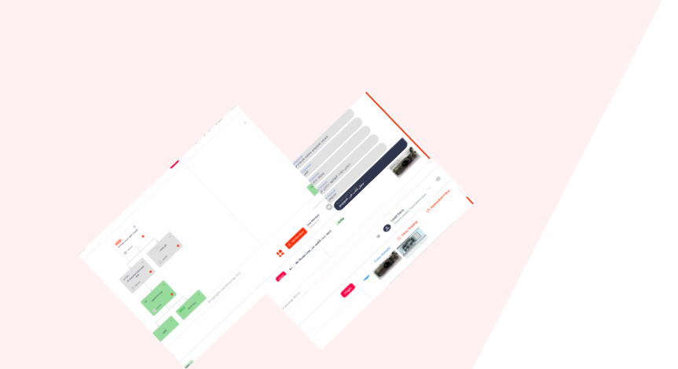

<section id="dialogue">
    <div class="row d-flex justify-content-center">
        <div class="col-sm-5 col-12 d-flex flex-column justify-content-center">
            <div class="map_img">
                
            </div>
        </div>
        <div class="col-sm-5 col-10 d-flex flex-column ">
            <p class="dialogue_title">
                Open Discussion With Mind Mapping , For Continuous Bloom Of Ideas.
            </p>
            <p class="sub_txt">
                You can invite your team members to join in the discussion and send files. These ideas could be added to
                the mind map and that would improvise the problem solving procedures in the organization.
            </p>
            <div class="dialogue_icons">
                
                
                
            </div>
        </div>
    </div>
</section>